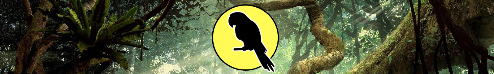
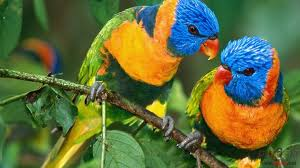

Psittaciform diversity in South America and Australasia suggests that the order may have evolved in Gondwana, centred in Australasia.[3] The scarcity of parrots in the fossil record, however, presents difficulties in confirming the hypothesis, and there is currently a higher amount of fossil remains from the northern hemisphere in the early Cenozoic.[4] Molecular studies suggest that parrots evolved approximately 59 million years ago (Mya) (range 66–51 Mya) in Gondwana. The three major clades of Neotropical parrots originated about 50 Mya (range 57–41 Mya).[5]
The carnivorous stem-parrot Messelastur.
A single 15 mm (0.6 in) fragment from a large lower bill (UCMP 143274), found in deposits from the Lance Creek Formation in Niobrara County, Wyoming, had been thought to be the oldest parrot fossil and is presumed to have originated from the Late Cretaceous period, which makes it about 70 million years old.[6] However, other studies suggest that this fossil is not from a bird, but from a caenagnathid oviraptorosaur (a non-avian dinosaur with a birdlike beak), as several details of the fossil used to support its identity as a parrot are not actually exclusive to parrots, and it is dissimilar to the earliest-known unequivocal parrot fossils.[7][8] Likewise, the earliest parrots did not have the specialised crushing bills of modern species.[4][9]
It is now generally assumed that the Psittaciformes, or their common ancestors with several related bird orders, were present somewhere in the world around the Cretaceous–Paleogene extinction event (K-Pg extinction), some 66 Mya. If so, they probably had not evolved their morphological autapomorphies yet, but were generalised arboreal birds. The combined evidence supported the hypothesis of Psittaciformes being "near passerines", i. e., the mostly terrestrial birds that emerged in close proximity to the K-Pg extinction. Analysis of transposable element insertions observed in the genomes of passerines and parrots, but not in the genomes of other birds, provides strong evidence that parrots are the sister group of passerines, forming a clade Psittacopasserae, to the exclusion of the next closest group, the falcons.[10]
Europe is the origin of the first undeniable parrot fossils, which date from about 50 Mya. The climate there and then was tropical, consistent with the Paleocene-Eocene thermal maximum. Initially, a neoavian named Mopsitta tanta, uncovered in Denmark's Early Eocene Fur Formation and dated to 54 Mya, was assigned to the Psittaciformes; it was described from a single humerus. However, the rather nondescript bone is not unequivocally psittaciform, and more recently it was pointed out that it may rather belong to a newly discovered ibis of the genus Rhynchaeites, whose fossil legs were found in the same deposits.[11]
Fossil skull of a presumed parrot relative from the Eocene Green River Formation in Wyoming
Fossils assignable to Psittaciformes (though not yet the present-day parrots) date from slightly later in the Eocene, starting around 50 Mya. Several fairly complete skeletons of parrot-like birds have been found in England and Germany.[12] Some uncertainty remains, but on the whole it seems more likely that these are not direct ancestors of the modern parrots, but related lineages that evolved in the Northern Hemisphere and have since died out. These are probably not "missing links" between ancestral and modern parrots, but rather psittaciform lineages that evolved parallel to true parrots and cockatoos and had their own peculiar autapomorphies:[13]